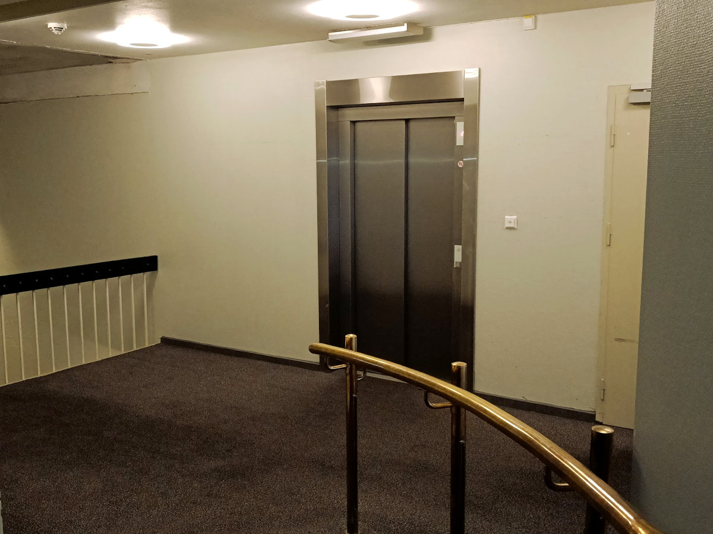

Outside the elevator

It seems like a small room after you leave the elevator
N context and question
There is only 1 door in front of you that has the leters EXIT you made it!
Enter the Exit door
Take elevator again and go up